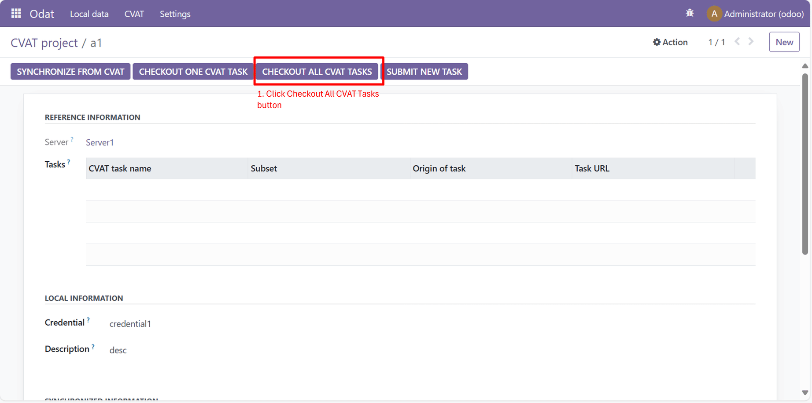

Odoo is a low-code, open-source suite of business tools that simplifies operations with drag-and-drop customization and pre-built modules, making it accessible to users without programming expertise.
This module optimizes CVAT (Computer Vision Annotation Tool) workflows by integrating local data management with CVAT's cloud services. It addresses issues like limited search, poor organization, and lack of local tracking. Compatible with Odoo 16 and later, it is ideal for managing large-scale annotation projects with ease and efficiency.
Refer to the following links for Odoo installation instructions:
Run the following command to install the required packages:
pip install cvat-sdk==2.21.0 aiofiles==24.1.0
Download and install the module from the following link: Imageset-CVAT Odoo Module
To configure volume mapping, Adminstration role is necessary. However, all other operations can be carried out by users assigned to the Odat user group. For a quick start, you can use the pre-defined user account: odat-user@example.com with the password "odatuser$123".
3.1 Create new dataset
3.2 View and edit existing dataset
4.1 Create new CVAT Server with credential information
4.2 View and test connection
4.3 Checkout project(s)
5.1 List checked out CVAT projects
5.2 Synchronize information from CVAT
5.3 Checkout one CVAT task
5.4 Checkout all CVAT tasks
5.5 Submit new task to CVAT
6.1 List submitted/checked out CVAT tasks
6.2 Synchronize CVAT task
7.1 List synchronized CVAT images
7.2 Show details of CVAT image
8.1 List scheduled actions
8.2 Show/edit details of scheduled action